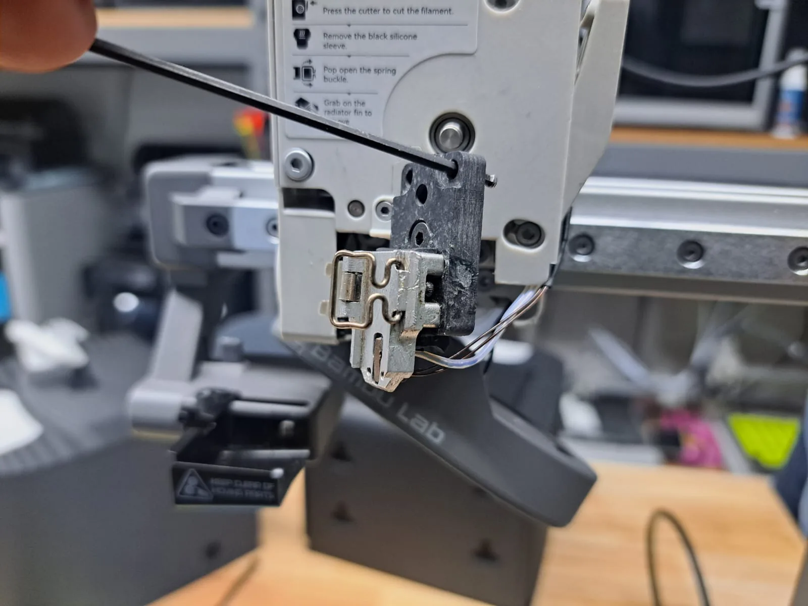

Cambio de hotend en Bambu Lab A1 y A1 mini
En la A1 y la A1 mini el hotend es de cambio rápido: boquilla, calentador y termistor salen en una sola pieza. Cuando la boquilla se tapa y no sale, o la temperatura falla, cambiar el hotend completo suele ser lo más rápido y barato.
Lo que casi siempre hay detrás

Tapón que no sale
Ya probaste descargar, limpiar y empujar, y sigue sin salir material. Un hotend nuevo te deja imprimiendo hoy.
Temperatura que falla
Avisos de temperatura de la boquilla o temperaturas que brincan, con el cable del cabezal ya revisado.
Boquilla gastada
Hilos y paredes irregulares después de muchas horas, sobre todo si usaste filamentos con fibra o brillantina.
Otro diámetro
Para piezas grandes y rápidas, 0.6 u 0.8 mm; para detalle fino, 0.2 mm. Tener un hotend por diámetro evita estar desarmando.
Lo que puedes revisar tú
Muchas veces se resuelve aquí. Si no, ya tienes la mitad del diagnóstico hecho.
- Descarga el filamento
Con la boquilla caliente, descarga el filamento desde la pantalla. Luego apaga la impresora y deja que se enfríe.
- Saca el hotend
Abre el seguro del hotend en el cabezal y sácalo hacia abajo. La guía oficial de Bambu Lab (wiki.bambulab.com) tiene fotos de cada paso.
- Pon el nuevo
Mételo hasta que asiente completo y cierra el seguro. Si no cierra fácil, no lo fuerces: casi siempre es que no subió hasta arriba.
- Dile a la impresora qué boquilla es
En la pantalla y en Bambu Studio indica el diámetro nuevo antes de imprimir.
Lo que hacemos en el taller
Si no quieres hacerlo tú, o no estás seguro de que sea el hotend, tráela: lo probamos con uno de repuesto, te decimos si era eso y te lo dejamos instalado. Si es otra cosa, te mandamos la cotización antes de cambiar nada. La reparación tiene garantía de 90 días.
Hotend A1 / A1 mini — $499 MXN
Hotend completo Emisha en 0.2, 0.4, 0.6 y 0.8 mm, en existencia. Ver hotends.
Diagnóstico — $300 MXN
Te decimos qué tiene, qué hay que cambiar y cuánto sale. Se cobra siempre, salga la reparación o no.
Mano de obra — $700 MXN
La reparación completa; $400 MXN si el diagnóstico ya se hizo aquí. Refacciones aparte, siempre con tu autorización.
Desde otro estado
Mándala por paquetería: en envío al taller cotizas la guía y te decimos cómo empacarla.
Lo que nos preguntan
¿El hotend Emisha es original de Bambu Lab?
No. Es el hotend Emisha compatible con A1 y A1 mini, lo vendemos con nuestra marca.
¿Qué diámetros tienen?
0.2, 0.4, 0.6 y 0.8 mm, en existencia en la Ciudad de México y con envío a todo el país.
¿Cuánto cuesta la reparación?
El diagnóstico cuesta $300 MXN. La mano de obra de la reparación es $700 MXN, o $400 MXN si el diagnóstico ya se hizo aquí. Las refacciones van aparte y nunca se cambian sin que tú lo autorices.
No estoy en la Ciudad de México, ¿me la pueden reparar?
Sí. Recibimos impresoras de todo México por paquetería: en envío al taller cotizas la guía y te decimos cómo empacarla.
¿No se arregló? Tráela al taller
Elige el día y la hora para dejarla. Recepción de lunes a viernes de 12:00 a 18:00, en Av. División del Norte 1354, Piso 1, Letrán del Valle, Benito Juárez, CP 03650.